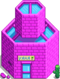

Çöl
| Çöl | |
 | |
| Oturanlar: | |
Patisko Çölü, Pelikan Kasabası'nın kuzeybatısında kalan bir bölgedir. Buradaki hava sezon farketmeksizin her zaman güneşlidir.
Halkevi'ndeki Mahzen Yığınları tamamlanmadan veya Joja Toplumsal Gelişim Proje Formu'nda  40.000g karşılığında "Otobüs Tamiri" yapılmadan Çöl'e ulaşılmasını sağlayan Otobüs Durağı'ndaki otobüs çalıştırılamaz.
40.000g karşılığında "Otobüs Tamiri" yapılmadan Çöl'e ulaşılmasını sağlayan Otobüs Durağı'ndaki otobüs çalıştırılamaz.
Özellikler
| Görsel | İsim | Açıklama |
|---|---|---|
 |
Kafatası Mağarası | Kafatası Mağarası'na giriş, Çöl'ün kuzeybatı noktasındadır. Mağaranın içindeki kapının kilidinin açılabilmesi için Kurukafa Anahtarı'na sahip olunmalıdır. |
 |
Vaha | Vaha, bölgenin güneybatısında bulunan bir dükkandır. Sandy tarafından yönetilir ve Pelikan Kasabası'nda satılmayan ögeler satılabilir, ayrıca haftanın belirli günlerinde çıkan ekstra ögelerle birlikte.
|
 |
Çöl Tüccarı | Bölgenin doğusunda Çöl Tüccarı'nın çadırı bulunur. |
 |
Üç Sütun | Çöl'ün kuzeydoğusunda üç tane sütun bulunur; bu yer oyundaki bir sırra bağlıdır. |
 |
Işınlanma Heykeli | Oyuncu bir Işınlanma Totemi: Çöl veya Çöl Dikilitaşı kullanarak çöle ışınlanabilir. İki yolda da oyuncu aynı ışınlanma heykeline ışınlanır, Çöl Tüccarı'nın kuzeyindedir. Oyuncu ne zaman Çöl'e ışınlanırsa ışınlansın, otobüs her zaman orada bulunacaktır, böylece oyuncu kasabaya geri dönebilir. |
 |
Kum Ejderhası | Vaha'nın kuzeyinde bulunan bir tepede bir kum ejderhasının büyük kemikleri bulunur. Bu yaratığın kafatasının yanında dururken onunla etkileşime geçilebilir, şöyle yazar: "Ağzı çöl güneşinde açılır. Öldüğünde bile tadını özler." Bu, Bay Qi'nin bir göreviyle ilişkilidir. |
Toplayıcılık
Sadece şu iki toplanılabilir öge, Çöl'de yıl boyunca ortaya çıkabilir:[1]
 Hindistan Cevizi (%50) ve
Hindistan Cevizi (%50) ve  Kaktüs Meyvesi (%50)
Kaktüs Meyvesi (%50)
Toplanılabilir ögeler yıl boyunca gece başı 2.0 oranla ortaya çıkar.[2] Haritada mümkün olan kareler kırmızı ve magenta olarak gösterilmiştir; orijinal ağaçlar yerindeyken, magenta karelerde toplanılabilir ögelerin ortaya çıkma oranı %90 daha azdır çünkü ağaçların arkalarında kalırlar.
Çöl'de bulunan orijinal ağaçların hepsi Palmiye Ağaçlarıdır. Kesilebilirler. Tohum düşürmezler ama sallandıklarında veya kesildiklerinde Hindistan Cevizi düşürürler. akıtılamazlar.
Ayrıca, normal ağaçlar (Akçağaaç, Meşe Ağacı, Çam Ağacı ve Maun Ağacı) Çöl'de ekilebilir.
Eserler
Çöl'de Eser Noktaları kazılarak bulunulabilecek Eserler şunlardır:
 Palmiye Fosili (%7)
Palmiye Fosili (%7) Altın Yazıt (%6)
Altın Yazıt (%6) Altın Maske (%3)
Altın Maske (%3)
Diğer bulunulabilecek ögeler de şunlardır:
- 1-3
 Kil (%48)
Kil (%48)  Kayıp Kitap (%20); bütün Kayıp Kitaplar bulunduğunda, Kayıp Kitaplar yerine
Kayıp Kitap (%20); bütün Kayıp Kitaplar bulunduğunda, Kayıp Kitaplar yerine  Karışık Tohumlar çıkmaya başlar.
Karışık Tohumlar çıkmaya başlar.- 1-3
 Taş (%16)
Taş (%16) - Daha önce bulunmamış bir
 Gizli Not: %4'lük bir şansa kadar, eğer oyuncu büyütece sahipse.
Gizli Not: %4'lük bir şansa kadar, eğer oyuncu büyütece sahipse.
Bilinmelidir ki Çöl'de hiçbir zaman Kar Patatesi, Kış Kökü ve Pirinç Filizi bulunamaz.
Eser noktaları, gece başı 1.0 oranla ortaya çıkar, kışta ise bu oran gece başı 1.4'tür.[3]
Balıkçılık

.
Çöl'deki balık tutma alanında birincil seçenek kuzeybatıdaki göldür. Oyuncu burada iki farklı balık yakalayabilir, isimleri de Kumbalığı ve Akrepbalığı'dır. Kumbalığı, Balık Havuzu'ndaki Özel Balıklar yığınında kullanılır.
Eğer oyuncu yeterli balıkçılık yeteneği seviyesine ve olta ekipmanlarına sahipse, haritanın güneydoğusundaki gölde balık tutabilir. Ancak, balıkçılık alanı, gölün tamamında 0 olduğundan sadece düşük kaliteli balıklar yakalanır. [4] Piramit Çıkartması da burada bulunabilir (%10 şans).

| Saat | |||||||||||||||||||||
|---|---|---|---|---|---|---|---|---|---|---|---|---|---|---|---|---|---|---|---|---|---|
| 06 | 07 | 08 | 09 | 10 | 11 | 12 | 13 | 14 | 15 | 16 | 17 | 18 | 19 | 20 | 21 | 22 | 23 | 00 | 01 | ||
Ek Bilgiler
Otobüsün çöle gidebilmesi için bir tünelden gitmesi, "EarthBound" adlı Nintendo oyununa bir referans olabilir.
Referanslar
- ↑ Toplanılabilir ögeler için verilen oran, o sezonda ortaya çıkabilecek bütün toplanılabilir ögeler için genel bir orandır. Bunun bilgileri GameLocation::spawnObjects'deki kod ile işlenen Locations.xnb lokasyonundadır.
- ↑ Çöl'deki toplam 3000 kareden, 923'ü (%31) standart toplanılabilir ögelerin ortaya çıkma kareleridir. Toplanılabilir ögelerin ortaya çıkması hakkında daha fazla bilgi için Toplayıcılık görüntülenilebilir.
- ↑ Çöl'deki toplam 3000 kareden, 1229'u (%41) eser noktaları için yıl boyunca ortaya çıkma noktalarıdır. Kışta da yılın diğer kalanı gibi eser noktaları lokasyonları aynı yerlerde olsa da, GameLocation:spawnObjects'deki chanceForNewArtifactAttempt, ortaya çıkma oranının kışta daha fazla olduğunu gösteriyor. Daha fazla bilgi için Eser Noktası sayfasını inceleyin.
- ↑ Yapı bilgilerinde bulunduğu gibi güney gölündeki su karelerinde balık tutulabilir ama bütün su kareleri "kara" kareleri olarak sayıldığı için balıkçılık alanları sıfıra eşittir.
Geçmiş
- 1.0: Tanıtıldı.
- 1.07: Çöl'de Kar Patatesleri bulma kaldırıldı.
- 1.4: Çöl Tüccarı eklendi. Kışta Kar Patatesleri veya Kış Kökü bulabilme hatası kaldırıldı. Birkaç tane de görüntü hataları düzeltildi.
- 1.4.1: Artık Çöl Tüccarı, yalnızca perşembe günleri yalnızca bir tane Büyülü Akide Şekeri satar.
- 1.4.4: Çöl gölüne yerleştirilen Yengeç Çömleklerinin hatalı gözükme hatası kaldırıldı. Artık Çöl Tüccarı'nın bulunduğu yere obje yerleştirilemiyor.
- 1.5: Güneydeki gölde artık Piramit Çıkartması bulunabilir.
- 1.5.4: Palmiye ağaçları artık Altın Hindistan Cevizi bulundurmuyor.
| Mekanlar | |
|---|---|
| Mekanlar | Cadı'nın Bataklığı • Çiftlik Göleti • Çiftlik • Çöl • Dağ • Demiryolu • Gizli Koru • Kafatası Mağarası • Kömürözü Ormanı • Kumsal • Lağım • Madenler • Mağara • Maden Arabası • Mezarlık • Zencefil Adası • Ustalık Mağarası • Mutant Böcek Yuvası • Ormanönü • Otobüs Durağı • Pelikan Kasabası • Taş Ocağı • Taş Ocağı Madeni • Tünel |